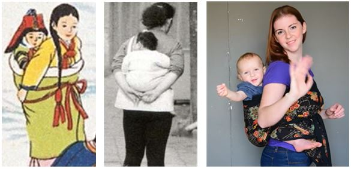

우리나라의 전통적인 방식인 포대기가 외국에서도 많이 알려지고 있습니다. 아기가 보호자의 등에 업혀서 체온을 느끼고 보호자와 같은 것을 보고 듣고 경험하면서 애착 형성과 아기의 발달에도 좋은 영향을 준다고 합니다. 과거에는 아기를 업고 있으면 아기의 다리가 굽어진다는 잘못된 속설이 있었으나 오히려 발달성 고관절 이형성증을 예방하는 데 도움이 된다고 합니다.
아기가 등에 업혀 있어 불안해하지 않고, 손이 자유로워 집안 일을 하기에도 편리한 측면도 있습니다.
현대식 유아용품이 많이 이용되지만 전통의 포대기를 개선한 모양의 상품화된 포대기들을 구매하여 사용해 보는 것도 좋을 것 같습니다.

그림. 포대기를 사용한 모습(왼쪽부터 옛 자료에 있는 포대기 사용 모습
근대의 우리나라 포대기 사용 모습, 미국 엄마들에게 포대기 사용법 알려주는 모습) (자료 : 한재휘, 이은진. 한국 전통 포대기의 유형과 변천. 패션비즈니스 2020;24(1):60-74., How to use a podaegi? https://www.youtube.com/ watch?v=IG3gmCycv3M, EBS 다큐 프라임. 오래된 미래. 전통 육아의 비밀. https://www.youtube.com/ watch?v=lwzQ6UxCoTc)